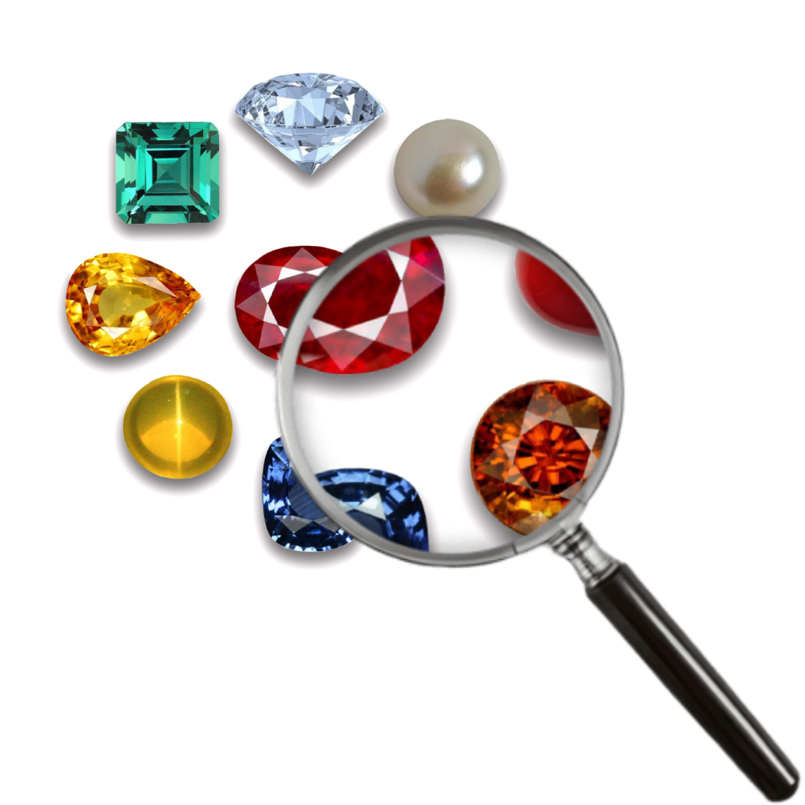

Who is Gemdation?

Hey, I'm a hispanic 18 year old from a small city in Texas, USA. My birthday is on June 19, 2007. I've grown up with the Internet since 2014 and later I've been creating stuff on it.
♾️🏳️🌈 I like technology, collectibles, abstract art, cartoons, and some of pop culture.
Appearance
 |
My Mii! Probably the only face appearance I'd ever put publicly. |
Contact
For any reason you'd like to talk to me, you can email gem@techie.com.
Personality
To be honest, I'd describe myself as a quiet irritable person, even childish. I don't really express my empathy often, possibly due to my autism. I talk at a 'mid level' in real life to people I don't know and I talk normally with family and some friends. Online, I talk my best.
Views
- Not religious; way too pessimistic for that but I'd never push someone down.
- Echo chambers are terrible, looking at other ideologies lets you see how the other sides think.
- Capitalism needs regulation, not deconstruction.
- Generative AI can only have its ethical use by not being apart of slop art farm.
- Every company should at least be a benefit corporation or social purpose corporation (SPC).
- Meat is an important factor in culture and the food pyramid to be taken away. Factory farming should be regulated to stop overproducing.
- Misogyny and misandry should not have any roles today, especially in progressive areas.
- Not going to debate any of my views because I just don't want to.
Yeah, I'm also aware of the stereotypes.
Online Contribution History
In 2017, my first footprint on the Internet was qchr.pw. It was...a domain. There's not much to say other than I got it when I was 9 years old via Google Domains. |
 |
Later in 2019 came spiral.page, another domain by Google Domains. Got this one at 12 years old and set it up with a blank Blogger theme. |
 |
From 2020-2021, I was lurking in some Minecraft YouTuber fandoms on Twitter and I had a few Google pages. These were the PostPS Blog on Google Sites and Blogger. |
 |
In 2021, I created Bugdroid Fanpage, also titled by Android Foundry Fan. It was going to carry images of Android merchandise, predecessor to Droid Pack. |
 |
From 2021-2023, I was regularly editing on the Pac-Man Wiki on Fandom. (Have used Kimbrezenmo and Gemdation usernames.) |
 |
From late 2021-2022, I was starting content for the Galaga Collection on Fandom. I later adopted the wiki and became admin for the first time on Fandom! (also using Kimbrezenmo and Gemdation.) |
 |
In 2024, I began cleaning up the Wii Wiki on Fandom during my return to the site following my new Wii console. I later adopted the wiki and became admin! |
 |
I started The Q as my first true website. It was a web snapshot directory dedicated console browsers and had a bit of Flash games. |
 |
I created Gemdation's Archives to archive my Google Sites pages and Google Classroom assignments. |
 |
After the archive came Gem's Shop as a way to get people to try games I liked via easily putting links to them. It was created during the Wii Shop frenzy of 2024. |
 |
Lastly in 2024, I started Droid Pack as a better Bugdroid repository built from the ground up. It expanded from merch and even from Bugdroid. |
 |
In May 2025, Wii Shop revival WiiMart came out of the blue and I quickly went to get staff and later became the web designer. |
 |